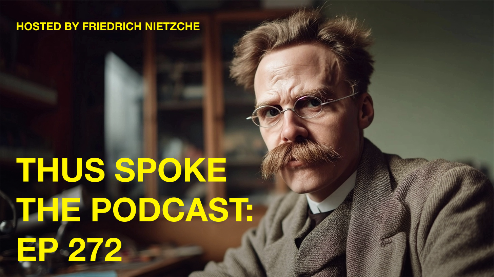
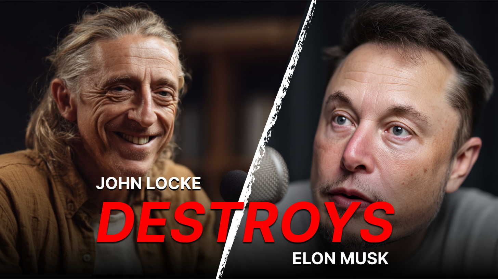

Resources
A collection of resources that can help you navigate uncertainty and make choices aligned with your values and goals.
Writing
Learn to separate signal from noise, and instincts from impulses.
-
The Illusion of Choice
How Modern Neuroscience Supports Determinism.
-
Beyond Free Will: A Brief History of Deterministic Philosophy
Tracing deterministic thought from ancient stoics to modern neuroscience.
-
Your Life Story Was Written Before You Were Born
How to fend off Nihilism when you have no agency.
-
5 Ways Your 'Free Will' is Actually Making You Miserable
How belief in choice creates unnecessary suffering in everyday life.
-
The Accountability Myth: Why Self-Blame Makes No Logical Sense
Examining the logical inconsistencies in holding yourself responsible.
Podcasts
Compelling conversations from the forefathers of determinism and free will.

1:02:00Thus Spoke the Podcast: EP 272
Friedrich Nietzsche
 1:14:14
1:14:14
Monads & Mics with Mark Zuckerberg
Gottfried Wilhelm Leibniz

1:24:00The John Locke Show
Tabula Rasa Media
Books
A carefully curated collection of books that explore the intersection of choice, purpose, and personal growth.

I Was Always Going to Write This Book
Nora Flich

Preordained and Prosperous
Skylar Vonn

Yes, But Why Did I Think That?
J. Ellington Splice, PhD

The Responsibility Loophole
Dr. Frida Noone, PhD

The Path and the Passenger
Eleanor Vann
Tools
Things I use to calm my mind and make decisions.
Deterministic Coin
A coin with heads on both sides.
Magic 8-Ball
Every answer is just the shrugging emoji.
BetterHelp
Sometimes you just need to talk to someone.
Post-it Notes
I use the green ones for my good ideas.
The Mobius Decision Tree
A decision-making flowchart that always leads back to the same outcome.